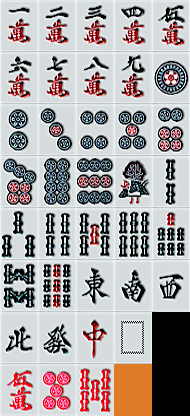
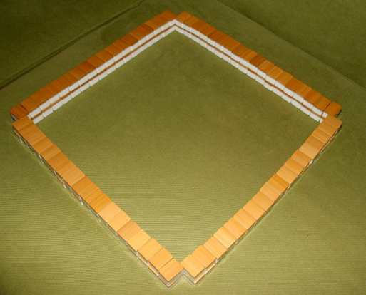
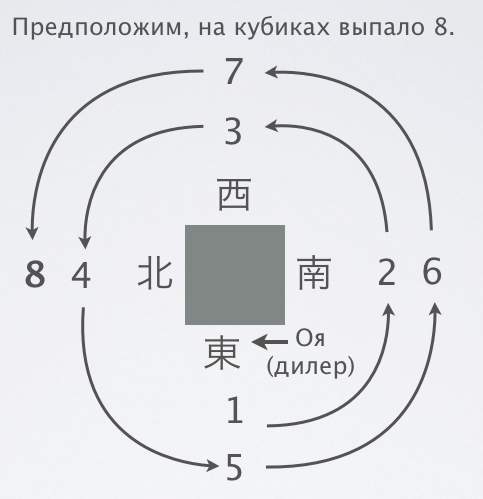
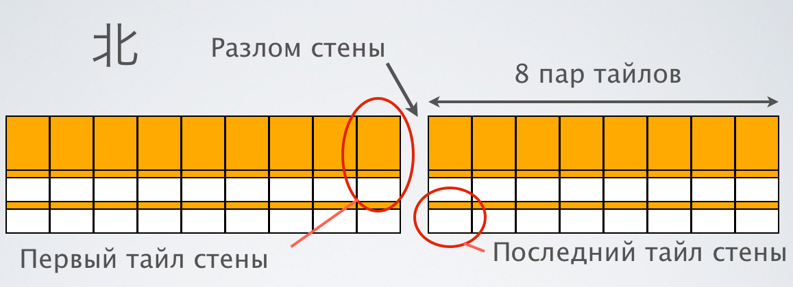
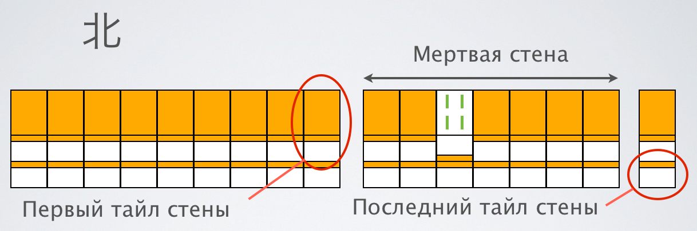

Базовые правила риичи-маджонга
Все сведения, данные ниже, являются основной и необходимой базой для успешной игры в риичи-маджонг.
Существуют вариации правил стола, о которых сказано дополнительно. Для прочтения базовых правил желательно знание
русскоязычной терминологии, которая дана в соответствующем разделе. В данном разделе для каждого русскоязычного термина указаны
всплывающие пояснения для облегчения понимания. Термины, имеющие такие пояснения, подчеркнуты точечной линией.
Вступление
Ри́ичи-маджо́нг - азартная игра на четверых человек. Игра берет свое начало в Китае; существует множество различных правил игры
в маджонг, в том числе китайские классические, китайские спортивные (MCR), тайваньские, американские. Риичи - модификация правил,
изобретенная в Японии относительно недавно - во второй половине прошлого века. Риичи-маджонг содержит 27 условий победы,
раздельные дискарды игроков, а также исключает использование тайлов цветов и сезонов. В этом разделе рассказывается о базовых
правилах игры в риичи-маджонг, которые необходимо освоить любому начинающему игроку. Описываемые правила основаны на официальных правилах
Japan Professional Mahjong League - японской профессиональной лиги маджонга.
Игровой инвентарь
Для игры используются 136 игровых фишек/костей, называемых тайлами. Тайлы можно поделить на виды согласно таблице:
| Тайлы мастей |
|
| Ман (символы) от 1 до 9: |
 |
| Пин (точки) от 1 до 9: |
|
| Соу (бамбуки) от 1 до 9: |
|
| Благородные тайлы |
|
| Ветра (В-Ю-З-С): |
|
| Драконы (красный-белый-зеленый): |
|
Единицы и девятки тайлов мастей называются терминальными тайлами. Тайлы мастей от 2 до 8 включительно называются простыми тайлами.
Каждого тайла в игре ровно 4 штуки. Всего видов тайлов - 34. Полный набор = 34 × 4 = 136 тайлов.
Для подсчета очков используются счетные палочки:
| Изображение |
Номинал |
|
10000 очков |
|
5000 очков |
|
1000 очков |
|
100 очков |
Каждому игроку в начале игры выдается базовое количество очков в размерах 30000.
Обычно это одна палочка на 10000, две на 5000, девять на 1000 и десять на 100 очков.
Цель игры - выиграть наибольшее количество очков. Очков в игре фиксированное количество, поэтому выиграть очки можно только получив их от другого игрока.
Таким образом, в риичи-маджонге важно не только выигрывать очки, но и не проигрывать их.
Также в игре используются:
- Два шестигранных кубика
- Индикатор дилера - пластинка, на которой с двух сторон нанесены изображения восточного и южного ветров.
Ход игры
Игровая партия состоит из раундов, называемых по стороным света. Партия, состоящая из восточных и южных раундов, называется ханча́н;
партия, состоящая только из восточных раундов, называется тонпуусе́н.
О том, какие раунды играются, оговаривается явно в правилах стола, однако если это явно не указано, предполагается, что играется ханчан.
В случае, если у кого-либо из игроков не остается очков, игра прерывается досрочно.
Игра начинается с определения первого о́я (дилера) - раздающего игрока. Существует несколько способов определения дилера, рассмотрим самые распространенные:
- На стол кладется четыре тайла различных ветров рубашкой вверх. Игроки вытягивают ветра, дилером становится игрок, вытянувший восточный ветер. Справа от него садится игрок, вытянувший юг, напротив - запад, слева - север.
- Каждый игрок бросает кубики один раз. Дилером становится игрок, у которого выпало наибольшее число на кубиках. Перераспределения игроков по местам относительно дилера в этом способе не происходит.
После указанных действий дилер кладет рядом с собой индикатор дилера - пластинку, на которой изображен восточный ветер с одной стороны и южный с другой.
Пластинка кладется так, чтобы сверху был восточный ветер - этот ветер будет являться текущим ветром раунда. Когда в игре начинаются южные раунды, пластинка переворачивается.
Подготовка к раздаче
Перед началом каждой раздачи игроки выкладывают тайлы на стол рубашкой вверх и тщательно их перемешивают. После этого игроки выстраивают на столе квадратную
стену из тайлов,
каждая сторона которой должна быть 17 тайлов в длину и 2 тайла в высоту:

Оя бросает кубики один раз и отсчитывает выпавшее на кубиках число
против часовой стрелки, начиная с себя (см. схему):

За каждым игроком закрепляются собственные ветра согласно схеме. Ветер, закрепленный за игроком, называется его
ветром места.
Игрок, на которого укажет оя (в примере это игрок северного ветра), отсчитывает в своей части стены, начиная с правого края,
то же самое выпавшее число и разделяет стену так,
чтобы справа от разлома было число пар тайлов, соответствующее числу, выпавшему на кубиках, а слева - оставшаяся часть.

Разбор стены происходит
по часовой стрелке начиная от разлома. Стена считается непрерывной и круговой, после окончания разбора
одной стороны стены начинается разбор следующей ее стороны по часовой стрелке.
Первый и последний тайлы стены указаны на рисунке. 7 пар тайлов с конца стены отделяются от основной стены, образуя
мертвую стену.
Эти 14 тайлов в разборе не участвуют, т.е. разбор стены оканчивается тогда, когда на столе не остается ни одного тайла из основной стены.
В мертвой стене третий тайл слева переворачивается. При этом получается следующая картина:

После всех проделанных манипуляций начинается первичный разбор стены. Начиная с дилера и с последовательностью хода
против часовой стрелки каждый игрок
берет себе три раза по 4 тайла (стопку 2х2).
После этого каждый берет 1 раз по одному тайлу (в последовательности сначала верхний, затем нижний), и наконец оя берет себе еще один тайл. На этом первоначальный разбор завершен.
Взятые тайлы игроки выставляют на стол перед собой так, чтобы сам игрок видел значащие рисунки на тайлах, а его оппоненты видели только рубашки его тайлов.
Набор тайлов у игрока называют его
рукой.
У оя-игрока на руке изначально 14 тайлов, у
ко-игроков - по 13 тайлов.
Ход раздачи
Ход игры состоит в последовательной замене тайлов в руке на другие тайлы, приходящие со стены. В порядке хода (против часовой стрелки) игроки
берут со стены один тайл, после чего выбирают в своей руке самый ненужный тайл и сносят его в
дискард -
специальное место в центре стола. Дискард складывается слева направо, по 6 тайлов в ряд, в три ряда. Четвертый ряд обычно не начинают
и при необходимости выкладывают седьмой и восьмой тайлы в третий ряд.
На своем ходу игрок
обязан взять один тайл (со стены либо
с дискарда другого игрока)
и сбросить один тайл в дискард (за исключением случая, когда взятый со стены тайл приносит игроку победу - в этом случае раздача заканчивается).
Тайлы, уже сброшенные в дискард, не участвуют в игре и с них нельзя сделать
объявлений.
Любые объявления можно делать исключительно с тайла, который на данный момент сбрасывается в дискард.
Целью модификации собственной руки является сбор в ней сочетаний тайлов - сетов. В руке необходимо собрать четыре сета и одну пару. Сет может быть трех видов:
- Три одинаковых тайла - ко́цу,
- Три последовательных тайла - шу́нцу, например 2-3-4, при этом последовательности можно собирать только из тайлов мастей,
- Четыре одинаковых тайла - ка́нцу.
- Пара, которая также обязана быть в руке, также называется то́йцу.
Объявления открытых сетов
Для ускорения сбора руки путем получения тайлов из чужого дискарда можно использовать
объявления. В случае, если в руке есть два одинаковых тайла
и кто-то сбрасывает третий, в этот момент можно громко сказать "
Пон", после чего вскрыть пару своих тайлов, положить справа от руки,
взять тайл из чужого дискарда и дополнить им пару так, чтобы получился сет. Игрок, взявший пон, должен сбросить лишний тайл, поскольку его рука
должна вернуться к ожидающему состоянию. После этого ход переходит к игроку, следующему по направлению хода за игроком, взявшим пон.
Пон можно взять с любого игрока, но только в момент его сброса. Взятый тайл кладется
боком так, чтобы было понятно, с какого игрока был взят пон:
В примере выше белый дракон был взят с игрока слева, 8
пин была взята с игрока напротив, а 2
соу - с игрока справа.
Если в руке есть два последовательных тайла и игрок слева сбрасывает в дискард третий, в этот момент можно громко сказать "
Чи", после чего
вскрыть пару последовательных тайлов, положить их справа от руки, взять тайл из чужого дискарда и дополнить им пару так, чтобы получился сет.
Игрок, взявший чи, должен сбросить лишний тайл, поскольку его рука должна вернуться к ожидающему состоянию. После этого ход переходит к игроку,
следующему по направлению хода за игроком, взявшим чи. После взятия чи нельзя сбросить такой же тайл, какой был взят из чужого дискарда, либо тайл,
дополнявший чи до закрытого
шунцу до взятия чи.
Чи можно взять
только с игрока слева. Тем не менее, взятый тайл кладется так, чтобы было понятно, что он взят с игрока слева:
В случае, если два игрока одновременно сказали "чи" и "пон" на один и тот же тайл, приоритет имеет игрок, сказавший "пон".
Рука, в которой есть открытые сеты, называется
открытой. В большинстве случаев, открытая рука стоит дешевле закрытой, кроме того иногда
с открытой рукой победить
просто нельзя. Модифицировать открытые части руки
нельзя,
т.е. запрещено осуществлять сброс и замену тайлов, которые находятся в открытых сетах.
Канцу или кан - особая форма, состоящая из четырех одинаковых тайлов. Канцу считается за один сет, но только в том случае, если он объявлен.
В примере ниже кан не существует, поскольку он не объявлен:
Канцу может получиться в руке тремя способами. Оговорим отдельно каждый из них. Допустим, в нас есть указанная выше рука и мы хотим объявить
кан четверок
пин. Для этого на своем ходу после взятия со стены мы громко говорим "
Кан", после чего вскрываем все четыре тайла.
Крайние два тайла с каждой стороны переворачиваем рубашкой вверх и выкладываем их справа от руки. Такая форма называется
анкан или закрытый кан.
Несмотря на то, что канцу выложен отдельно, рука, содержащая
только закрытый кан, считается закрытой. В мертвой стене открывается новый верхний
тайл, следующий за тайлом, открытым в самом начале раздачи. Далее, поскольку теперь в руке игрока недостаточно тайлов, он должен взять
риншанпай - компенсирующий тайл из мертвой стены. После этого игрок совершает обычный сброс тайла в дискард и ход переходит дальше.
Рука игрока после совершения описанных действий станет выглядеть следующим образом:
Второй способ получения канцу - путем объявления. В случае, если в руке есть
анко, а кто-либо сбрасывает
четвертый тайл, можно громко сказать "Кан", после чего вскрыть
коцу, положить их справа от руки и дополнить взятым
тайлом из чужого дискарда.
В примере выше белый дракон был взят с игрока слева, 8
пин была взята с игрока напротив, а 2
соу - с игрока справа.
После взятия кана точно так же требуется взять
риншанпай и совершить сброс в дискард.
В случае открытого кана (который называется
минкан) новый верхний тайл в мертвой стене открывается не сразу после объявления,
а сразу после сброса, но до любых объявлений со сброшенного тайла.
Третий и последний способ получения канцу заключается в возможности дополнения открытого
коцу до канцу. Это можно
сделать в том случае, если у игрока открыт пон и со стены заходит последний четвертый тайл. В этом случае игрок вправе громко сказать "Кан"
и доложить взятый тайл к пону, после чего взять
риншанпай и совершить сброс в дискард.
Точно так же после сброса открывается новый верхний тайл в мертвой стене. Рука после объявления доложенного кана может выглядеть следующим образом:
Непосредственно после того, как был доложен кан, и до того, как игрок взял риншанпай, любой другой игрок вправе объявить победу (
чанкан)
с доложенного тайла, если его ожидание включает этот тайл. Если в игре объявлено 4 канцу и после сброса на четвертом кане никто не выиграл,
объявляется пересдача.
Чи, пон и кан не могут быть объявлены на хотейпае - последнем сброшенном тайле в раздаче.
Объявление победы, ничья и пересдача
Выигрышная рука состоит из четырех сетов и пары; первая из двух основных целей игры - собрать выигрышную руку. Ожидающая рука -
рука, которой не хватает одного тайла до победы. Состояние игрока, у которого рука ожидающая, называется темпай.
В игре победа всегда объявляется игроком с ожидающей рукой с дополнительного тайла. Дополнительный тайл для победы может быть получен двумя способами:
- Дополняющий тайл может быть взят со стены. Эта ситуация называется цумо́,
- Дополняющий тайл может быть взят с дискарда кого-либо из игроков. Эта ситуация называется рон.
При победе по рон, игрок, с дискарда которого была объявлена победа, единолично выплачивает победившему игроку
некоторую сумму очков. Если на один и тот же тайл были
сделаны объявления "чи", "пон" и "рон", приоритет имеет объявление победы. Последовательность действий игрока при победе по рон:
- При появлении в дискарде выигрышного тайла, громко вслух сказать "Рон".
- Взять выигрышный тайл из чужого дискарда и положить его перед рукой. Недопустимо вставлять выигрышный тайл в руку.
- Полностью открыть свою руку, чтобы остальные игроки могли проверить факт победы.
- Огласить количество очков, в которое оценивается рука.
При победе по цумо, победившему игроку платят все остальные игроки за столом. Последовательность действий точно такая же, за тем
исключением, что тайл берется из стены, а не с чужого дискарда и при этом громко вслух говорится "Цумо".
В случае, если никто из игроков не объявил победу до того момента, как стена оказалась полностью разобрана, объявляется
ничья.
При ничьей темпай-игроки открывают свои руки, чтобы остальные игроки могли проверить их темпай, после чего
нотен-игроки выплачивают темпай-игрокам штраф. Общая сумма выплат по ничьей фиксирована и всегда
равна
3000. Таким образом, если 1 игрок темпай, то каждый из остальных игроков платит ему по 1000, если
2 игрока темпай, то оставшиеся 2 игрока платят им по 1500 каждый, а если 3 игрока темпай, то оставшийся игрок платит каждому по 1000.
Если все игроки темпай или все игроки
нотен, выплат по ничьей не производится.
В случае, если победил оя, либо при ничьей оя остался темпай, назначается ренчан - дополнительная раздача. За каждый
ренчан на индикатор дилера кладется одна палочка номиналом в 100 очков, которая называется хонба.
В победах в каждой последующей раздаче за каждую хонбу к основной сумме выплат добавляется 300 очков. В случае победы по рон,
выплаты по хонбе ложатся на проигравшего игрока, в случае же цумо выплаты делятся поровну между оставшимися тремя игроками.
При победе
ко-игрока
хонба сбрасывается до нуля и индикатор дилера переходит
следующему игроку по направлению хода (против часовой стрелки). С этой минуты игрок справа становится новым оя. В случае,
если при ничьей оя остался
нотен, индикатор также переходит по направлению хода, но
хонба не сбрасывается, а увеличивается на 1. Когда каждый игрок побывал дилером по одному разу (неважно сколько
ренчанов при этом состоялось), при следующей смене дилера индикатор переворачивается и начинаются южные раунды. Когда каждый
игрок побывал дилером в южных раундах, игра завершается и подсчитываются очки.
В ряде случаев раздача может быть прервана досрочно и назначена пересдача. Пересдача считается ренчаном (докладывается
счетчик хонбы). Пересдача назначается в следующих случаях:
- Если в первом круге сдачи все игроки сбросили фишки одного ветра.
- Игрок может объявить пересдачу при своём первом взятии со стены, если у него на руке есть минимум девять разных терминальных или благородных тайлов. При этом до его хода никто не должен был объявлять чи, пон или кан. Эта пересдача носит название кюсюкюхай.
- После объявления четвертого кана. Пересдача происходит, если каны принадлежат разным игрокам, а в момент объявления четвертого кана никто не объявил победу. Однако, если один человек объявил четыре кана, то игра продолжается, но остальные игроки не могут объявить пятый кан.
- Победа троих. Ситуация, когда три игрока объявляют победу на одном и том же тайле, сброшенным четвёртым игроком.
- Четыре риичи. Происходит при объявлении четвертого риичи, если никто не объявил рон на сброшенный тайл.
Яку и хан
Наличие выигрышной руки является необходимым, но не достаточным условием возможности объявления победы. Вторым условием,
которое должно быть выполнено, является наличие в руке игрока как минимум одного
яку - особого ценного условия.
Полный список яку можно посмотреть в
одноименном разделе, здесь же мы ограничимся
рассмотрением комбинационных яку и риичи.
Яку измеримы и некоторые яку дороже других. Стоимость яку измеряют в единицах, которые называются хан.
Рассмотрим одно из самых популярных яку - якуха́й.
Якухай -
коцу или
канцу тайлов драконов, ветров
места или ветров раунда. Якухай стоит 1 хан. Если собран якухай ветра раунда, который одновременно является ветром
места, такой якухай является двойным и стоит соответственно 2 хан. Пример выигрышной руки, в которой собран якухай
зеленых драконов:
В руке может быть собрано более одного якухая, в этом случае их стоимость суммируется. Обычно якухай - самая
распространенная причина раннего открытия руки.
Есть несколько яку, которые
работают только на закрытой руке, также есть несколько яку, стоимость которых
на открытой руке меньше, чем стоимость на закрытой. Пример:
В данной руке есть яку
иипе́йко, которое заключается в том, что в руке есть два одинаковых
шунцу. Иипейко работает
только на закрытой руке.
Бывает такое, что при закрытой руке никак не складывается никакое яку, и нет даже намека на победу. Возьмем
например следующую руку:
Эта рука является ожидающей, но в ней не только нет ни одного яку, но нет и никакой перспективы это яку
получить в процессе модификации. И в этом случае к нам приходит на помощь особое яку японского маджонга,
из-за которого он и получил свое название -
ри́ичи. Риичи - это игровое условие, а не комбинация
тайлов внутри руки, но это игровое условие является яку, которое стоит 1 хан.
Риичи можно объявить при условии темпая на закрытой руке. Для этого игрок на своем ходу громко говорит
"Риичи", сбрасывает в дискард лишний тайл, поворачивая его боком, и делает ставку в размере 1000 очков.
Ставка кладется на стол перед дискардом игрока. После объявления риичи игрок
не вправе модифицировать руку.
Это плата за получение возможности победить. Другими словами, теперь каждый взятый со стены тайл обязан быть
снесен в дискард, если он не дает победы, даже если этот тайл является очевидно выигрышным кому-либо другому.
Риичи не может быть объявлен позднее, чем за 4 тайла до конца стены. Запомнить можно так: после объявления
риичи у игрока должна быть возможность взять тайл со стены в случае, если ход в дальнейшем не будет прерван
никакими объявлениями.
Дора
В игре существуют так называемые тайлы
до́ра - бонусные тайлы, каждый из которых увеличивает стоимость
руки на 1 хан.
Дора не дает яку. При начальном разборе стены в мертвой стене переворачивается
единственный верхний тайл. Этот тайл играет роль
указателя доры. Дорой является тайл, следующий по порядку
за тем тайлом, который указан в индикаторе. Например, если в индикаторе 5
ман, то шестерка ман будет дорой.
Последовательности замкнуты:
- 1 → 2 → 3 → 4 → 5 → 6 → 7 → 8 → 9 → 1
- чун → хаку → хацу → чун
- восток → юг → запад → север → восток
Каждый раз при взятии кана, открывается новый указатель доры. Таким образом, дор в игре становится не 4, а 8.
Больше канов - больше дор. Дора, полученная открытием нового указателя после кана, называется кандорой.
В случае выгрыша при объявлении риичи, помимо верхних указателей доры, смотрятся еще и нижние указатели - те тайлы,
которые лежат непосредственно под открытыми верхними указателями доры. Доры, полученные открытием нижнего указателя,
называются урадо́рами, либо если нижний указатель находится под указателем кандоры - кан-урадо́рами.
Таким образом, за каждый кан в игру добавляется четыре кандоры и четыре кан-урадоры.
В некоторых правилах стола предусмотрена замена пятерок мастей на аналогичные пятерки, но окрашенные в ярко-красный
цвет. Эти красные пятерки называются акадо́рами и являются дорами сами по себе независимо от того, какой тайл
лежит в указателе доры. Если в указателе лежит четверка какой-либо масти, то акадора этой масти одновременно является
и дорой, и акадорой, поэтому увеличивает стоимость руки не на 1, а на 2 хан.
Фуритен
В японском маджонге существует правило фурите́н, которое гласит, что игрок лишается возможности победить
по рон, если любой из его выигрышных тайлов находится в его дискарде. Поэтому это правило также иногда называют
"Правилом упущенного дискарда". Победа при фуритене допустима только со стены, т.е. по цумо.
Правило фуритен дает важную составляющую игры, а именно - возможность игры в защиту. Если какой-то игрок объявил
риичи, можно смело сбрасывать любые тайлы из тех, что лежат у него в дискарде, если таковые конечно имеются в нашей
руке. Выиграть с них он не сможет, а в случае попытки объявить победу при фуритене - это будет засчитано как
неправильное объявление победы с последующим штрафом.
Также именно правилом фуритен объясняется необходимость класть взятые тайлы в открытые сеты так, чтобы было понятно,
с каких игроков они были взяты. Следует относиться к этому крайне внимательно, иначе можно получить штраф из-за
ошибки другого игрока.
Временный фуритен
Также существует так называемое правило вре́менного фуритена, которое запрещает победу по рон, если на
этом же круге была возможность объявить победу, но игрок ей не воспользовался. Например, если мы побеждаем с 2 и 5
пин, правый игрок в свой ход сбросил 2 пин, но мы не объявили победу, игроки напротив и слева могут свободно сбрасывать
2 и 5 пин на этом круге, поскольку мы не сможем с них победить из-за временного фуритена. Это дает важную тактику
защиты - если сбрасывать тайл, который только что был сброшен игроком слева, с этого тайла не сможет победить
никто в силу фуритена и временного фуритена.
Временный фуритен длится до момента, когда игрок может формально сменить ожидание, то есть до взятия игроком тайла
со стены. В принципе, игрок может и не менять ожидание, но ключевое слово здесь - формально, и вот почему:
в случае, если игрок обявил риичи, он не может менять свое ожидание. В этом случае пропущенный победный тайл дает
ему временный фуритен, который длится до конца раздачи, поскольку игрок не может сменить ожидание даже формально.
Разумеется, в случае "вечного" временного фуритена возможна победа по цумо.
Подсчет очков
Подсчет очков сводится к подсчету количества хан, которые даются за яку и доры, и к подсчету миниочков фу, которые
даются за выполнение некоторых условий в руке. Для подсчета количества хан следует посмотреть список яку, просуммировать
количество хан по всем найденным яку и добавить к ним количество хан по дорам - по одному за каждую дору, акадору, кандору,
урадору, кан-урадору. Миниочки фу подсчитываются по следующим правилам:
- Базовое число фу: 20. Меньше этого не может быть.
- Победа по цумо: +2 фу. Не учитываются при пинфу и риншан кайхо.
- Победа по рон при закрытой руке: +10 фу.
- Ожидание на победу в танки, канчан или пенчан: +2 фу.
- Пара, состоящая из якухайных тайлов: +2 фу. Если пара состоит из ветра раунда, одновременно являющегося ветром места: +4 фу.
- За коцу и канцу:четыре объявленных одинаковых тайла согласно таблице:
| Тип |
Открытый |
Закрытый |
| Коцу простых тайлов |
+2 фу |
+4 фу |
| Коцу терминальных или благородных тайлов |
+4 фу |
+8 фу |
| Канцу:четыре объявленных одинаковых тайла простых тайлов |
+8 фу |
+16 фу |
| Канцу:четыре объявленных одинаковых тайла терминальных или благородных тайлов |
+16 фу |
+32 фу |
В случае ожидания в
шанпон
при победе по рон, полученное коцу считается
открытым и миниочки для него считаются соответственно. В том же случае,
но при победе по цумо, полученное коцу считается
закрытым. После подсчета миниочки фу округляются вверх до десятков.
После этого требуется посмотреть в таблицу выплат, где в зависимости от количества хан и фу определить требуемые выплаты.
Существуют два особых яку, которые не состоят из четырех сетов и пары:
- Кокушимусо - комбинация из 13ти тайлов, по одной единице и девятке каждой масти, по одному ветру и дракону + пара к любому из 13ти тайлов. Кокушимусо стоит якуман.
- Чиитойцу - комбинация из семи пар любых тайлов. Чиитойцу стоит 2 хан и имеет фиксированное количество фу, равное 25.
Нарушения правил
Ну и наконец ложка дегтя: существуют определенные штрафы за нарушения правил, независимо от того, было ли нарушение
преднамеренным или случайным.
- Чомбо - штраф стоимостью в манган, выплачиваемый игроком за грубое нарушение правил, не позволяющее продолжить сдачу. При чомбо дилер остается на месте, риичи депозиты возвращаются, хонба не добавляется, т.е. ситуация должна вернуться на состояние в начале сдачи.
- Мертвая рука - состояние игрока, при котором он не имеет права делать никаких объявлений, при ничьей он считается нотен. Если игрок с мертвой рукой объявляет пон, чи, кан или победу, то он наказывается чомбо.
Следующие действия наказываются чомбо:
- Нотен риичи, назначается в случае ничьей.
- Ошибочное объявление победы, применяется в случае объявления победы и полного открытия не имеющей выигрыша руки. Ошибочное объявление победы имеет больший приоритет, чем объявления открытых сетов, но меньший, чем правильное объявление победы, т.е. если на один и тот же тайл было сделано два объявления победы, и одно из них было ошибочным, засчитывается второе объявление и к первому штраф чомбо не применяется.
- Объявление кана, меняющего ожидание при риичи, назначается в случае ничьей или победы игрока объявившего такой кан.
- Если по вине игрока текущую раздачу невозможно продолжать.
Следующие ситуации караются мертвой рукой:
- Взятие тайла из стены вне очереди, пропуск хода или неправильное взятие.
- Ошибочное объявление чи, пона, кана (в этом случае взятый тайл возвращается обратно в дискард), либо объявление чи не в свой ход.
- Неправильное количество тайлов в руке (более или менее 13 тайлов + 1 за каждый объявленный кан).
- Подсматривание тайлов из мертвой стены или рук других игроков.